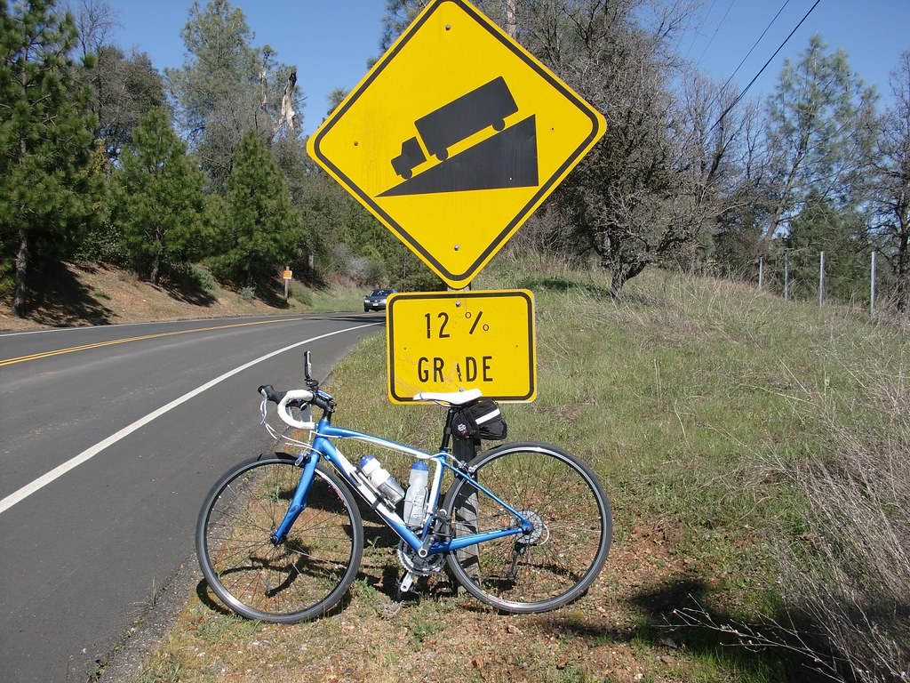

When's the best time to surge when cycling up a hill?
Posted on March 21, 2025 in Physics

The Physics of Cycling Uphill
When cycling, several forces affect your motion:
- Propulsive Force: The power you generate divided by your velocity
- Gravity: Pulls you down, making climbs harder. The heavier you are, the more power you need to climb.
- Rolling Resistance: Friction between tires and road, linear with velocity.
- Air Resistance: Increases with the square of your velocity
The simulation below models a 1'200 m route with a hill in the middle. You can apply a power surge at different points to see when it's most effective.
When Should You Surge?
The key question: When is the optimal time to apply a short power surge to minimize your total time?
- On the flat sections?
- At the beginning of the climb?
- In the middle of the climb?
- Near the top of the climb?
- During the descent?
Use the simulator below to find out!
Simulation Parameters
Power Settings
Advanced Parameters
Elevation Profile
Total Time vs. Surge Start Position
Understanding the Results
The simulation identifies the zone where your time will be minimized. There might be a slight wobble in sections: this is just a result of the simulation's granularity. Any spot on the hill between "momentum is spent" and "surge will be appplied downhill" is a good spot to surge.
Here, let's look at some general conclusions. Of course, this isn't real life! A good cyclist will be able to determine how long and how hard to push for a given hill, in a way where they can recover before the next hill or attack.
Don't surge before the climb!
I often do this, telling myself I'll "spread the load" a bit before so that the peak power during the ascent is lower. But in most simulations, you'll find that the time is dramatically slower if the surge is applied before the climb. This is because all the extra power is "wasted" by accelerating on flat ground where air resistance is the dominant force.
Don't surge before your momentum is spent!
You'll also notice that the first optimal surge point is not exactly as the start of the climb. This is because the surge is most effective when the rider is at their slowest speed, just before the climb starts.
Race Dynamics - surge at the bottom, or the crest?
In real racing, optimal surge timing can depend on tactical considerations beyond pure physics. This simulation doesn't model drafting, but in a race, a surge would be more effective at dropping riders when drafting is most useful, i.e. at higher speeds in the downhill section.
This is why you will often see surges applied near the crest of a climb in professional cycling - it's a strategic move to break away from competitors!